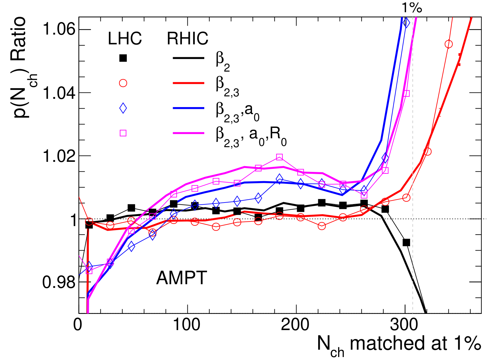
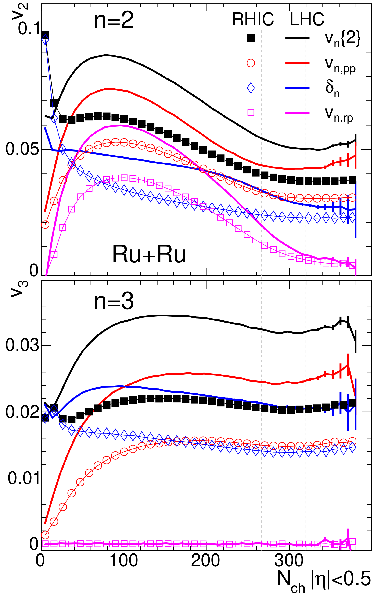
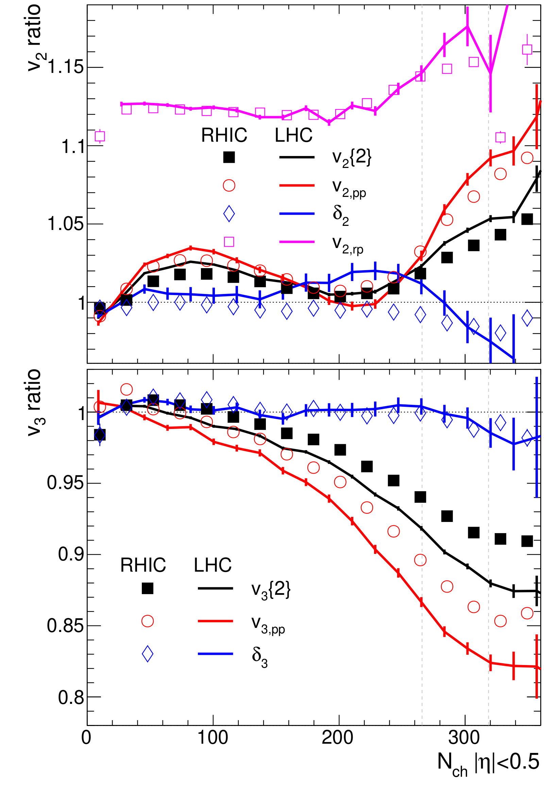
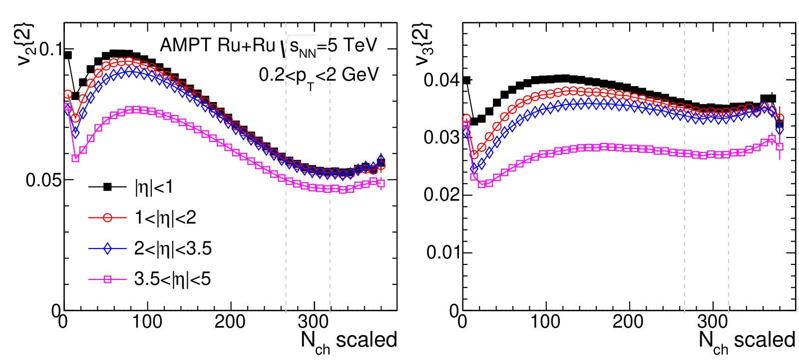
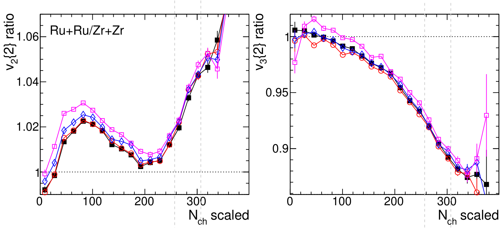
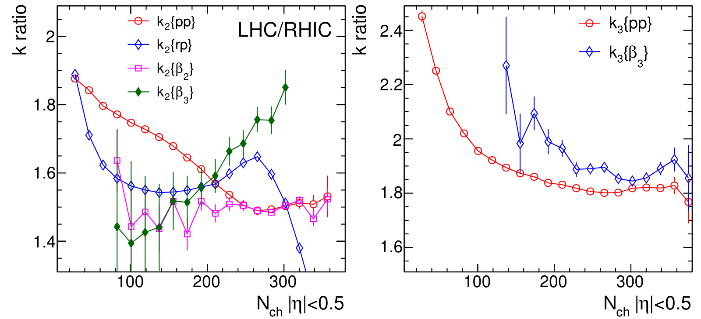

Independent sources of eccentricity explain the modest energy dependence of isobar flow ratios
Energy dependence of heavy-ion initial condition in isobar collisions
S. Bhatta, C. Zhang, J. Jia, Phys. Lett. B 858, 139034 (2024)
My role: leading author of this phenomenology study.
In one paragraph
Ruthenium-96 and zirconium-96 have the same number of nucleons but different shapes. Comparing their collisions through ratios cancels most of the poorly known plasma physics. Using the AMPT model at RHIC (0.2 TeV) and LHC (5.02 TeV) energies, we find the ratios are robust and nearly independent of rapidity, but respond more strongly to nuclear deformation at the LHC.
1The gap: does the "initial condition" change with energy?
The initial condition, the shape and density of matter just after two nuclei collide, cannot be calculated from first principles. In model fits it is entangled with the plasma's own properties, so both must be determined together.
Isobars offer a clean handle: if Ru+Ru and Zr+Zr collisions give different results, the difference must come from nuclear structure. But at high energy the initial condition is built from gluons carrying a small fraction x of the nucleon's momentum, whose distribution should change with collision energy and with rapidity (angle relative to the beam).
2What we compute: ratios, one structure parameter at a time
We simulated isobar collisions with the AMPT transport model at 0.2 and 5.02 TeV. Five nuclear configurations step from Ru to Zr by changing one parameter at a time (β₂, β₃, surface width a₀, radius R₀), so each effect can be isolated. We compute the multiplicity distribution and elliptic (v₂) and triangular (v₃) flow. To compare energies fairly, LHC multiplicities are scaled by 1/3.9 to match RHIC.
We also split the flow into a part aligned with the initial shape, the participant-plane flow vpp, and a remainder δ that is uncorrelated with it.
3What we observe
Multiplicity ratios do not depend on energy

A large part of flow ignores the initial shape

Only the shape-driven flow carries the structure signal, and more so at the LHC

Ratios barely change with rapidity


4What we conclude
The initial shape has several independent sources: random fluctuations, the average almond shape, and the nuclear deformations β₂ and β₃. Each is converted into flow with its own response coefficient k. In AMPT these coefficients all grow with energy, but at rates that differ by about 20–30%, and the deformation responses grow faster than the fluctuation response. That is why the ratios deviate more from 1 at the LHC.

- Robust probes: isobar ratios are similar at both energies and nearly independent of rapidity.
- Stronger at the LHC: the response to deformation grows with energy, most visibly for β₃ in v₃.
- Structure lives in the geometry: the structure effect is carried entirely by vpp; the uncorrelated part δ does not see it.
- General lesson: a large part of vₙ is not tied to the eccentricity, and different eccentricity sources have different responses, which matters for interpreting flow at RHIC and the LHC.
5What comes next
- Measure it: isobar ratios at the LHC, compared with RHIC, would test how the initial condition changes with energy.
- Better models: HIJING's initial condition in AMPT has too weak a rapidity dependence. Realistic nuclear parton distributions and gluon saturation are needed.
- Higher-order correlations: expected to show stronger energy dependence and better sensitivity.
- Small systems: in p/d/³He+Au, flow may be dominated by δ, so vpp should better reflect the geometry ordering.
- Other isobar pairs: the method is not limited to Ru and Zr.
All plots on this page are reproduced from that paper under CC BY 4.0. Animations are simplified illustrations made for this page, not results of the paper.